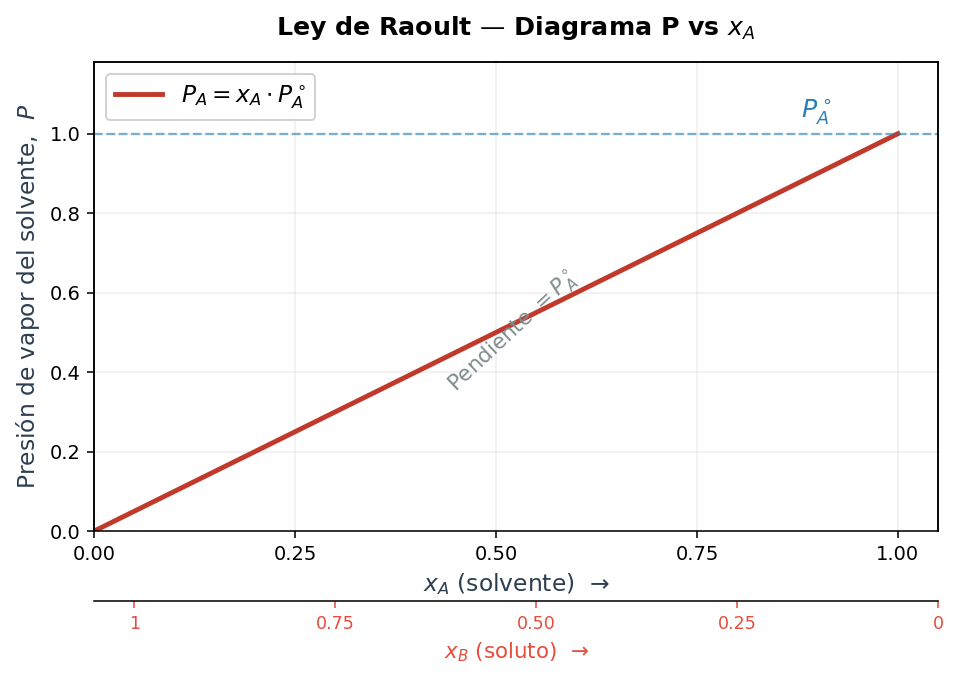
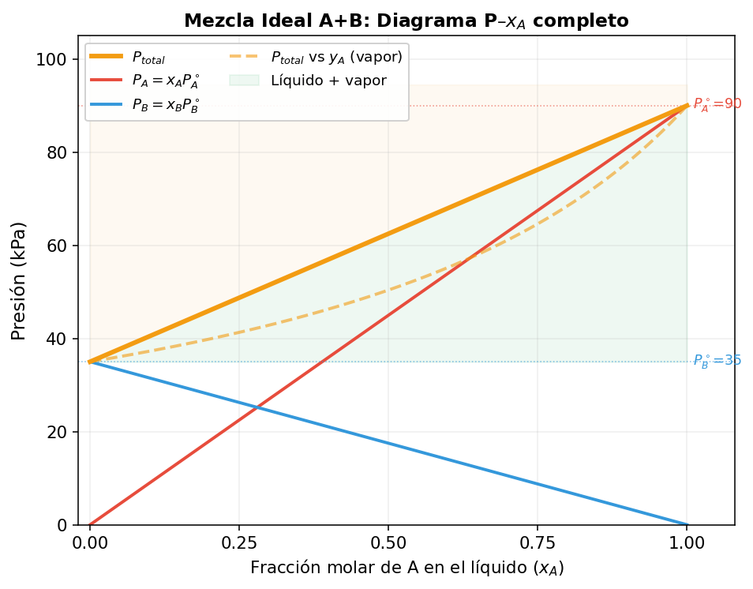
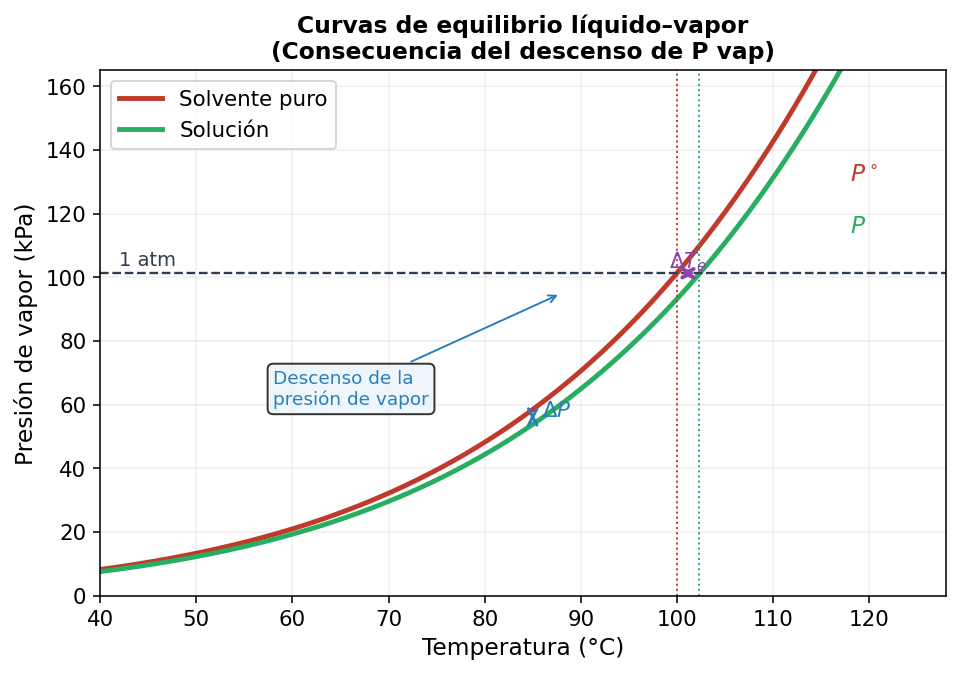
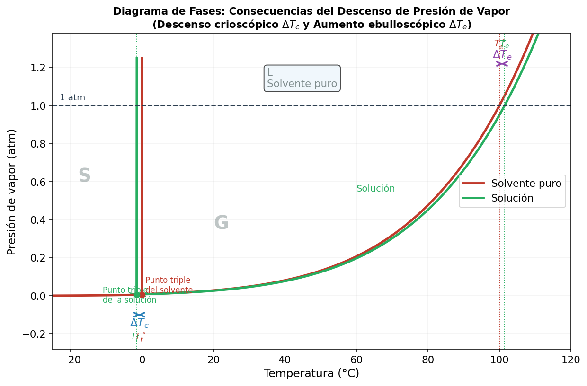
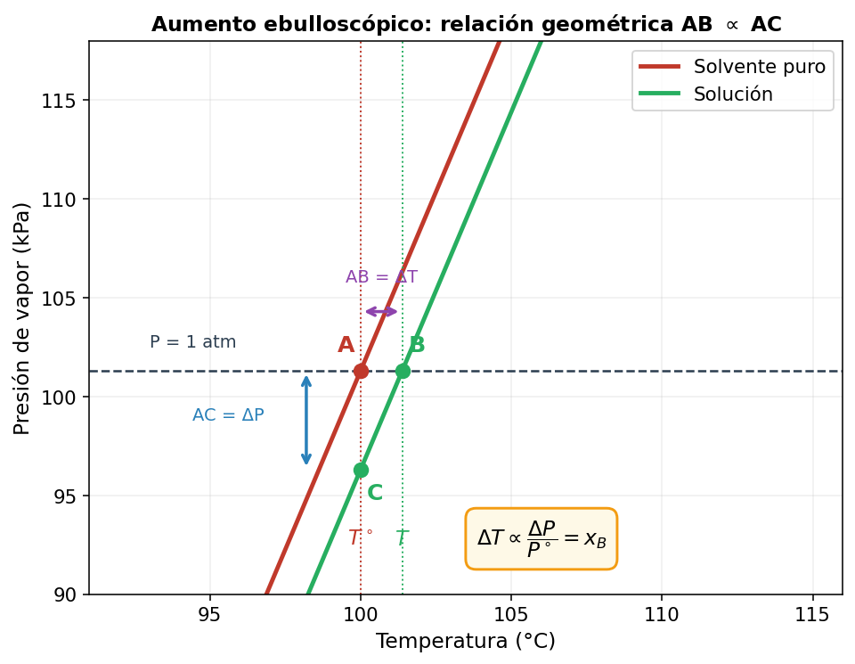
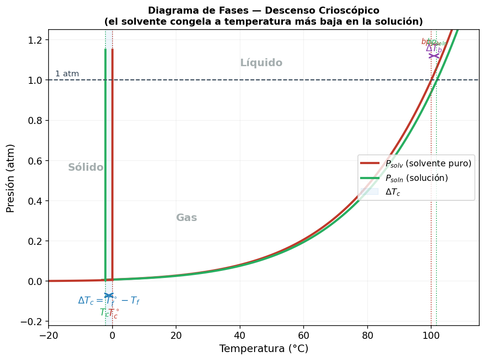
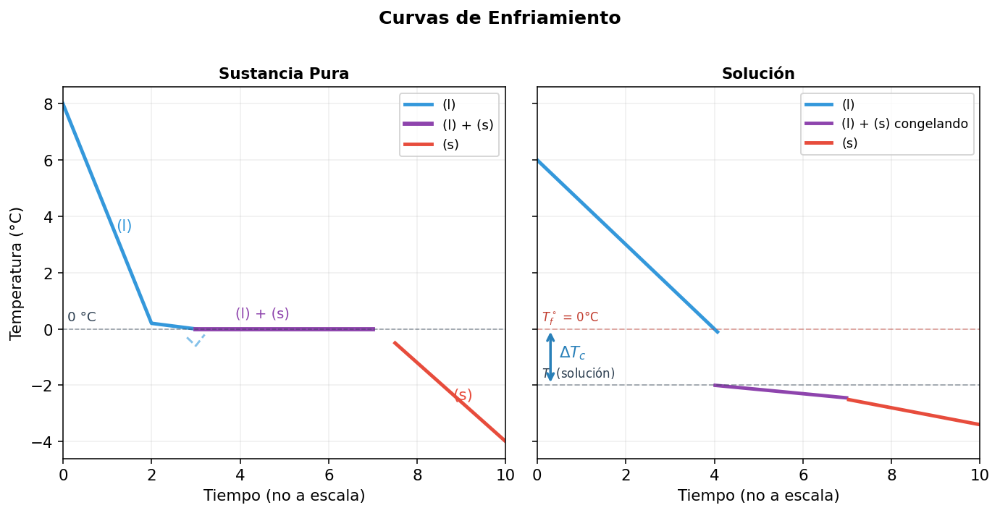
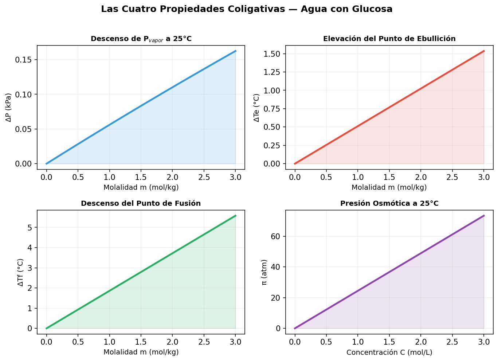
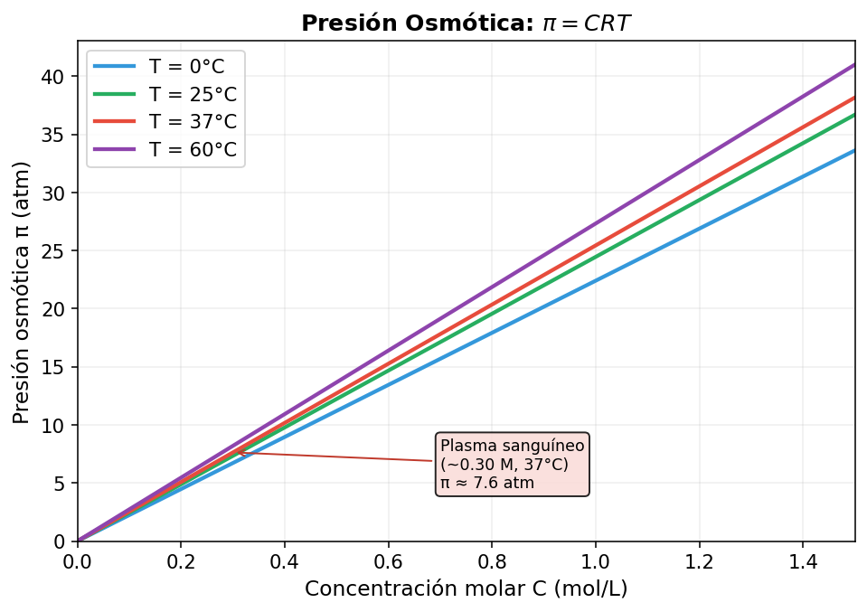
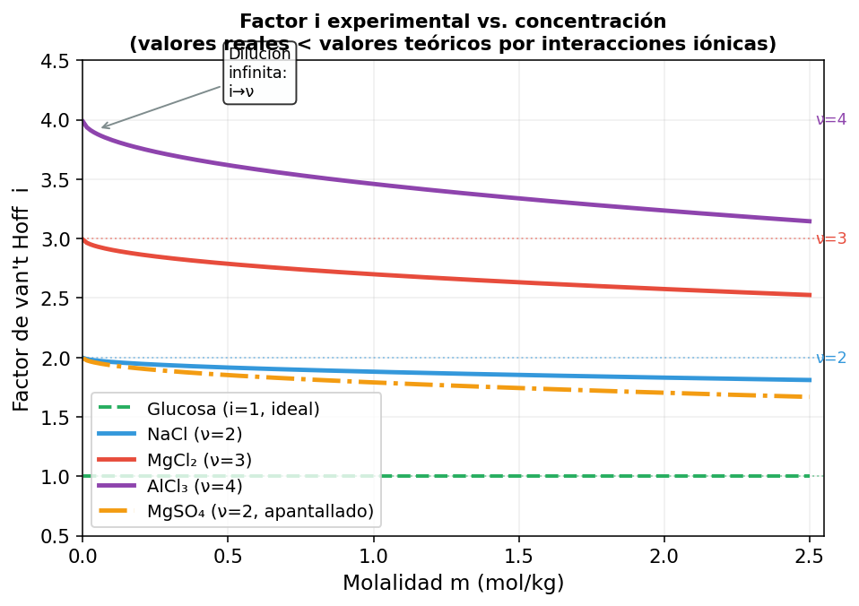

Tema 1 — Ley de Raoult y Soluciones Ideales
Presión de vapor en mezclas binarias ideales
Desarrollo Conceptual
La Ley de Raoult (François-Marie Raoult, 1887) establece que la presión parcial de vapor de cada componente en una solución ideal es igual a su presión de vapor pura multiplicada por su fracción molar en la mezcla:
La presión total de la mezcla binaria ideal (Ley de Dalton) es:
Una solución es ideal cuando las interacciones A–B son equivalentes a las interacciones A–A y B–B. Ejemplos: benceno + tolueno, hexano + heptano.
Diagrama de Presión vs. Composición
En una solución ideal, \(P_{total}\) varía linealmente con \(x_A\). La composición de la fase vapor \(y_A\) es distinta a la del líquido:
El vapor se enriquece en el componente más volátil (\(P^*\) mayor). Este principio es la base de la destilación fraccionada.
Desviaciones de la Idealidad
Desviación negativa: \(P_{total} < P_{Raoult}\). Interacciones A–B más fuertes (puentes de H cruzados). Ejemplo: agua + HCl, agua + acetona.

Gráfico 1 — PA vs xA: relación lineal de Raoult. La pendiente es P°A. El eje inferior muestra xB (soluto) en sentido inverso.

Gráfico 2 — Diagrama P–x completo para mezcla A+B volátiles. La curva discontinua muestra la composición del vapor yA ≠ xA.
Applet 1A — Diagrama P–x de Raoult (Solución Ideal)
Applet 1B — Comparación Ideal vs. Real
Preguntas de Estudio — Tema 1
- Una mezcla de benceno (P° = 95 kPa) y tolueno (P° = 30 kPa) tiene xbenceno = 0.4. Calcula la presión total y la composición del vapor.
- ¿Por qué en una solución ideal la presión total varía linealmente con la composición?
- ¿Qué condiciones intermoleculares producen una desviación positiva de la Ley de Raoult?
- El sistema etanol–agua exhibe una desviación positiva máxima: ¿qué consecuencia práctica tiene esto para la destilación del alcohol?
- Demuestra que \(y_A > x_A\) cuando \(P_A^* > P_B^*\).
Tema 2 — Descenso de la Presión de Vapor
Efecto de un soluto no volátil sobre la presión de vapor del solvente
Desarrollo Conceptual
Cuando se disuelve un soluto no volátil en un solvente, la presión de vapor del solvente disminuye. Esto se sigue directamente de la Ley de Raoult:
El descenso de presión de vapor \(\Delta P\) es:
donde \(x_B\) es la fracción molar del soluto. La disminución es proporcional a la cantidad de partículas de soluto, no a su naturaleza química: primera propiedad coligativa.
Interpretación Molecular
Las moléculas de soluto en la superficie del líquido ocupan posiciones que antes ocupaban moléculas de solvente, reduciendo la frecuencia de escape del solvente hacia la fase gaseosa. La presión de vapor resultante es menor.
Consecuencias en el Diagrama de Fases
El descenso de presión de vapor provoca un desplazamiento hacia abajo de la curva de equilibrio líquido-vapor. Esto resulta en:
- Aumento del punto de ebullición (la solución necesita más temperatura para alcanzar Patm)
- Descenso del punto de fusión (la curva líquido-sólido también se desplaza)

Gráfico 3 — Curvas de equilibrio líquido-vapor. La curva de la solución (verde) está desplazada hacia abajo (ΔP) y a la derecha (ΔTe).

Gráfico 4 — Diagrama de fases completo mostrando simultáneamente el descenso crioscópico ΔTc y el aumento ebulloscópico ΔTe.
Origen Entrópico del Descenso de Presión de Vapor
💧💧💧
💧💧💧
Solvente puro
P° mayor
ΔSvap grande
🔴💧🔴
💧🔴💧
Solución
P menor
ΔSvap más pequeño
Applet 2A — Calculadora de Descenso de Pvapor
Applet 2B — Diagrama de Fases: Efecto del Soluto
Preguntas de Estudio — Tema 2
- Calcula el descenso de presión de vapor al disolver 34.2 g de sacarosa (M = 342 g/mol) en 180 g de agua a 25°C (P°agua = 23.8 mmHg).
- ¿Por qué la identidad química del soluto (siempre que sea no volátil) no afecta \(\Delta P\)?
- Explica a nivel molecular por qué un soluto no volátil disminuye la presión de vapor del solvente.
- Si se mezcla glicerol (no volátil) con agua, ¿cómo cambia el diagrama de fases del agua?
- ¿Qué relación existe entre el descenso de presión de vapor y la entropía de mezcla?
Tema 3 — Ebulloscopia y Crioscopia
Elevación del punto de ebullición y descenso del punto de fusión
Elevación del Punto de Ebullición (Ebulloscopia)
Un soluto no volátil eleva el punto de ebullición del solvente. La relación cuantitativa es:
donde \(m\) es la molalidad (mol soluto / kg solvente) y \(K_e\) es la constante ebulloscópica del solvente, con unidades K·kg/mol.
Descenso del Punto de Fusión (Crioscopia)
El punto de fusión desciende (la solución funde a menor temperatura). \(K_f\) es la constante crioscópica.
| Solvente | Teb (°C) | Ke (K·kg/mol) | Tfus (°C) | Kf (K·kg/mol) |
|---|---|---|---|---|
| Agua | 100.0 | 0.512 | 0.0 | 1.86 |
| Benceno | 80.1 | 2.53 | 5.5 | 5.12 |
| Ciclohexano | 80.7 | 2.79 | 6.5 | 20.0 |
| Etanol | 78.4 | 1.22 | -117 | 1.99 |
| Ácido acético | 118.1 | 3.07 | 16.6 | 3.90 |
| Alcanfor | 204.0 | 5.95 | 178.4 | 37.7 |
Fórmulas de las Constantes
Solventes con mayor \(T^2/\Delta H\) tendrán constantes más grandes → mejores para determinar masas molares por crioscopia.
⚗️ Deducción Rigurosa de las Fórmulas Ebulloscópica y Crioscópica
Seguimos la derivación del libro Elementos de Química-Física (S. Glasstone). Partimos de la ecuación de Clausius-Clapeyron y aplicamos dos aproximaciones sucesivas válidas para soluciones diluidas.
Parte A — Elevación del Punto de Ebullición (ΔTe)
Punto de partida: ecuación de Clausius-Clapeyron
La variación de la presión de vapor \(P\) con la temperatura \(T\) sigue:
donde \(\Delta H_v\) es la entalpía de vaporización del solvente (constante en el rango pequeño de temperaturas considerado).
Integración entre límites
Integramos entre el estado de la solución \((P,\,T)\) y el del solvente puro \((P^\circ,\,T^\circ)\):
Aquí \(T^\circ\) es la temperatura de ebullición del solvente puro a 1 atm, y \(T\) la de la solución.
Primera aproximación: solución diluida
Definimos \(\Delta T_e = T - T^\circ > 0\) (el aumento de T de ebullición). Entonces \(T^\circ - T = -\Delta T_e\), y la ecuación se convierte en:
Aplicación de la Ley de Raoult
Para un soluto no volátil, la Ley de Raoult da la presión de vapor de la solución:
Tomando logaritmo: \(\ln(P/P^\circ) = \ln(1-x_B)\).
Segunda aproximación: desarrollo de Taylor del logaritmo
La justificación es que si \(x_B = 0.01\), el término cuadrático \(x_B^2/2 = 0.00005\), despreciable frente a \(x_B\).
Combinando: resultado en función de xB
Igualando las expresiones de los pasos 3 y 5:
Conversión de fracción molar xB a molalidad m
La fracción molar del soluto es:
Relacionando con la molalidad \(m = 1000\,n_B\,/\,(M_A\,n_A)\):
Resultado final para el aumento ebulloscópico
Esta constante depende solo del solvente. Para el agua: \(T^\circ=373.15\text{ K}\), \(M_A=18.015\text{ g/mol}\), \(\Delta H_v=40700\text{ J/mol}\) → \(K_e = 0.512\text{ K·kg/mol}\) ✓
Parte B — Descenso del Punto de Fusión (Crioscopia, ΔTf)
La derivación es completamente análoga, pero ahora estudiamos el equilibrio sólido–líquido en lugar del líquido–vapor. La condición de equilibrio establece que el potencial químico del solvente en el sólido puro es igual al del solvente en la solución.
Equilibrio sólido–solución al punto de congelación
Al congelar la solución, solo congela el solvente puro (el soluto queda en la fase líquida). La condición de equilibrio es:
Esto lleva a que \(\ln x_A < 0\) (ya que \(x_A < 1\)), lo que significa que el solvente en la solución tiene menor potencial químico que el sólido puro a la misma temperatura: la solución se resiste a congelar.
Ecuación análoga a Clausius-Clapeyron para la fusión
El análisis termodinámico conduce a una ecuación de la misma forma, pero ahora con la entalpía de fusión \(\Delta H_f\) y el punto de fusión del solvente puro \(T_f^\circ\):
donde \(\Delta T_c = T_f^\circ - T_f > 0\) es el descenso crioscópico (el punto de fusión de la solución es más bajo).
Aplicación de las mismas aproximaciones
Resultado en fracción molar y conversión a molalidad
Constante crioscópica Kf
Para el agua: \(T_f^\circ=273.15\text{ K}\), \(M_A=18.015\text{ g/mol}\), \(\Delta H_f=6010\text{ J/mol}\) → \(K_f = 1.86\text{ K·kg/mol}\) ✓
Note que \(\Delta H_f \ll \Delta H_v\) (fusión requiere mucho menos energía que vaporización), por eso Kf > Ke para cualquier solvente.
Resumen de Aproximaciones Realizadas
| # | Aproximación | Condición de validez | Error introducido |
|---|---|---|---|
| 1 | \(T \cdot T^\circ \approx (T^\circ)^2\) | \(\Delta T \ll T^\circ\) (solución diluida) | <1% si ΔT < 3K |
| 2 | \(\ln(1-x_B) \approx -x_B\) | \(x_B \ll 1\) (dilución) | <0.5% si \(x_B < 0.01\) |
| 3 | \(n_A + n_B \approx n_A\) | \(n_B \ll n_A\) | Idéntico a aproximación 2 |
| 4 | \(\Delta H_v, \Delta H_f\) = cte | Rango pequeño de T | Despreciable en ΔT < 10K |

Gráfico 5 — Relación geométrica: ΔT = AB es proporcional a ΔP/P° = AC. Esto demuestra que ΔTe ∝ xB.

Gráfico 6 — Diagrama de fases crioscópico mostrando el desplazamiento del punto de fusión ΔTc (región azul).

Gráfico 7 — Curvas de enfriamiento: la sustancia pura tiene una meseta horizontal al congelar; la solución muestra una pendiente durante la congelación porque la concentración aumenta mientras congela.

Gráfico 8 — Las cuatro propiedades coligativas del agua con glucosa en función de la concentración. Todas son lineales para soluciones diluidas.
Applet 3A — Calculadora Ebulloscopia / Crioscopia
Applet 3B — Termómetro: Efecto en Puntos de Cambio de Fase
Preguntas de Estudio — Tema 3
- Se disuelven 10.0 g de glucosa (M = 180 g/mol) en 200 g de agua. ¿Cuál es el nuevo punto de ebullición y de fusión de la solución?
- ¿Por qué el alcanfor tiene un Kf tan grande? ¿Qué ventaja práctica tiene?
- Deduce las unidades de Ke a partir de la fórmula \(\Delta T_e = K_e \cdot m\).
- ¿Cómo se puede usar la crioscopia para determinar la masa molar de un soluto desconocido?
- Una solución acuosa hierve a 100.25°C. ¿Cuál es su molalidad? ¿A qué temperatura congela?
- ¿Por qué se agrega sal al hielo para derretir el hielo en las calles?
Tema 4 — Ósmosis y Presión Osmótica
Transporte de solvente a través de membranas semipermeables
Desarrollo Conceptual
La ósmosis es el flujo espontáneo del solvente desde una solución de menor concentración hacia una de mayor concentración, a través de una membrana semipermeable (que permite el paso del solvente pero no del soluto).
La presión osmótica \(\pi\) es la presión que debe aplicarse a la solución para detener el flujo osmótico. La ecuación de van't Hoff (1887) la relaciona con la concentración molar:
Tipos de Soluciones según Tonicidad
| Tipo | Concentración | Efecto en Glóbulos Rojos |
|---|---|---|
| Isotónica | = plasma (~0.9% NaCl) | Sin cambio de forma |
| Hipotónica | < plasma | Hinchazón → hemólisis |
| Hipertónica | > plasma | Crenación (arrugamiento) |
Aplicaciones
- Diálisis renal: remoción de desechos por ósmosis
- Ósmosis inversa: desalinización del agua de mar (se aplica presión mayor que \(\pi\))
- Conservación de alimentos: salazón y azucarado
- Turgencia vegetal: rigidez de células vegetales
- Determinación de masas molares: alta sensibilidad para macromoléculas

Gráfico 9 — Presión osmótica π = CRT para diferentes temperaturas. Notar la escala: a 0.3 M ya se alcanzan ~7 atm, equivalente a la presión del plasma sanguíneo.
Esquema: Ósmosis Directa vs. Ósmosis Inversa
Esquema comparativo: en la ósmosis directa el solvente fluye hacia la solución más concentrada; en la ósmosis inversa se aplica una presión >π para invertir el flujo (desalinización).
Applet 4A — Calculadora de Presión Osmótica
Applet 4B — Visualizador de Tonicidad Celular
Preguntas de Estudio — Tema 4
- Calcula la presión osmótica de una solución 0.150 M de NaCl a 37°C (asumiendo i = 2).
- Una proteína (MM desconocida) disuelve 1.00 g en 100 mL de agua; la presión osmótica medida a 25°C es 2.50 mmHg. Calcula la masa molar.
- ¿Por qué la ósmosis inversa requiere presiones tan altas para desalinizar agua de mar (~35 g/L de NaCl)?
- Explica a nivel molecular por qué las células vegetales se vuelven turgentes en agua pura.
- ¿Por qué la presión osmótica es especialmente útil para determinar masas molares de macromoléculas frente a otros métodos coligativos?
Tema 5 — Factor de van't Hoff y Electrolitos
Corrección de propiedades coligativas para solutos iónicos
Desarrollo Conceptual
Las propiedades coligativas dependen del número de partículas en solución. Los electrolitos disocian al disolverse, generando más partículas de las esperadas. El factor de van't Hoff \(i\) corrige esto:
Las ecuaciones coligativas corregidas son:
Valores Teóricos de i
| Electrolito | Disociación | i teórico |
|---|---|---|
| Glucosa (no electrolito) | Glucosa → Glucosa | 1 |
| NaCl | Na⁺ + Cl⁻ | 2 |
| MgCl₂ | Mg²⁺ + 2Cl⁻ | 3 |
| AlCl₃ | Al³⁺ + 3Cl⁻ | 4 |
| Na₂SO₄ | 2Na⁺ + SO₄²⁻ | 3 |
| Ca₃(PO₄)₂ | 3Ca²⁺ + 2PO₄³⁻ | 5 |
Factor i Real: Grado de Disociación
En soluciones reales (no infinitamente diluidas), la disociación es incompleta (electrolitos débiles) o las interacciones entre iones reducen el número efectivo de partículas libres. El grado de disociación \(\alpha\) se relaciona con \(i\):
donde \(n\) es el número de iones que daría disociación completa. Para NaCl: \(n = 2\), por lo que \(i = 1 + \alpha\).
Electrolitos débiles (CH₃COOH, NH₃): \(\alpha \ll 1\), \(i \approx 1\) a altas concentraciones.

Gráfico 10 — Factor i experimental vs. concentración. En dilución infinita i→ν, pero a concentraciones finitas los pares iónicos reducen i. MgSO₄ muestra el mayor apantallamiento por ser 2-2.
Esquema: Deducción de la Relación i–α
Para un electrolito AxBy con ν = x+y iones y grado de disociación α:
1 mol AxBy
(sin disociar)
(1-α) sin disociar
+ αx mol Az+
+ αy mol Bz-
(1-α) + αx + αy
= 1 + α(x+y-1)
= 1 + α(ν-1)
Applet 5A — Explorador del Factor i
Applet 5B — Grado de Disociación α e i
Preguntas de Estudio — Tema 5
- Una solución 0.100 m de MgCl₂ congela a -0.519°C. Calcula el factor i experimental y compáralo con el teórico.
- El ácido acético (CH₃COOH) en solución 0.10 M tiene una presión osmótica de 2.7 atm a 25°C. Calcula α.
- ¿Por qué i experimental de NaCl es menor que 2 a concentraciones moderadas?
- Ordena de mayor a menor punto de ebullición: soluciones 0.1 m de glucosa, NaCl, CaCl₂, AlCl₃ (todas en agua).
- Una proteína con MM = 60,000 g/mol y un electrolito con i = 3 se disuelven ambos a 1 g/L en agua a 37°C. Compara sus presiones osmóticas.
Guía de Estudio — Soluciones II: Propiedades Coligativas
I. Conceptos Clave para Dominar
- Definición y significado de propiedad coligativa. ¿Por qué depende del número de partículas y no de su identidad?
- Ley de Raoult: formulación matemática, condiciones de validez, concepto de solución ideal.
- Desviaciones positivas y negativas de Raoult: interpretación molecular, ejemplos.
- Diagrama P–x–y para una mezcla binaria ideal: curvas de burbuja y de rocío.
- Descenso de presión de vapor: derivación desde Raoult, relación con fracción molar.
- Ebulloscopia: fórmula, significado de Ke, derivación termodinámica.
- Crioscopia: fórmula, significado de Kf, aplicaciones para determinación de MM.
- Ósmosis: definición, membrana semipermeable, dirección del flujo.
- Presión osmótica: ecuación de van't Hoff (π = CRT), unidades, aplicaciones.
- Tonicidad: isotónica, hipotónica, hipertónica; efectos en células biológicas.
- Factor de van't Hoff i: definición, valores teóricos para electrolitos comunes.
- Grado de disociación α: relación i = 1 + α(n−1).
- Comparación de las cuatro propiedades coligativas: sensibilidades relativas.
II. Problemas de Aplicación Directa
- Mezcla ideal benceno (P° = 95.1 kPa) + tolueno (P° = 28.4 kPa) con xbenceno = 0.60. Calcula Ptotal y composición del vapor.
- Disuelve 25.0 g de urea (MM = 60 g/mol) en 500 g de agua a 25°C (P°agua = 3.17 kPa). Calcula el descenso de presión de vapor.
- Calcula ΔTe y ΔTf para una solución de 15.0 g de NaCl (i = 1.9) en 250 g de agua.
- Una solución de polímero con 5.00 g/L en agua a 25°C tiene π = 0.180 atm. Calcula la masa molar del polímero.
- Compara la presión osmótica a 37°C de: (a) 9 g/L de NaCl (i=2) y (b) 18 g/L de glucosa (i=1).
- Una solución 0.200 m de ácido débil HX congela a -0.386°C. Calcula α y Ka aproximada.
III. Problemas Integradores y de Mayor Dificultad
- Una mezcla de A (P° = 120 kPa) y B (P° = 40 kPa) tiene composición de vapor yA = 0.70. Determina xA en el líquido y Ptotal.
- Demuestra algebraicamente que para una solución ideal binaria siempre se cumple yA > xA cuando P°A > P°B.
- Una solución acuosa de glucosa tiene π = 7.65 atm a 25°C. Calcula: (a) concentración, (b) ΔTe, (c) ΔTf, (d) descenso Pvapor a 25°C. Compara la precisión de cada método para determinar MM = 180 g/mol.
- El agua de mar tiene ~3.5% NaCl y otras sales, con concentración iónica total ~0.6 mol/L. Estima la presión mínima para desalinizar por ósmosis inversa a 25°C.
- CaCl₂ sólido se usa para fundir hielo. Compara la eficiencia (descenso de Tf por gramo) de CaCl₂, NaCl y urea. ¿Cuál es más eficiente y cuál más barato de usar?
- Una solución 0.050 m de Na₂SO₄ tiene ΔTf = -0.265°C. Calcula i experimental y α, sabiendo que n = 3.
IV. Preguntas Conceptuales Avanzadas
- ¿Por qué el diagrama P–x de una mezcla con azeótropo no puede separarse completamente por destilación?
- ¿Por qué la presión osmótica es el método preferido para determinar masas molares de macromoléculas?
- Un paciente recibe suero glucosado 5% (50 g/L de glucosa, M=180). ¿Es isotónico con el plasma (π ≈ 7.6 atm a 37°C)? Justifica.
- ¿Cómo afectan las interacciones ión-ión al factor i de un electrolito fuerte concentrado?
- Las plantas de ambientes salinos (halófitas) sobreviven con πinterno > πexterno. Explica el mecanismo y su costo energético.
- ¿Por qué el punto de ebullición del agua a 2800 m de altitud (~73 kPa) es ~91°C? ¿Cómo cambia ΔTe a esa altitud si la Ke no cambia pero T° sí?